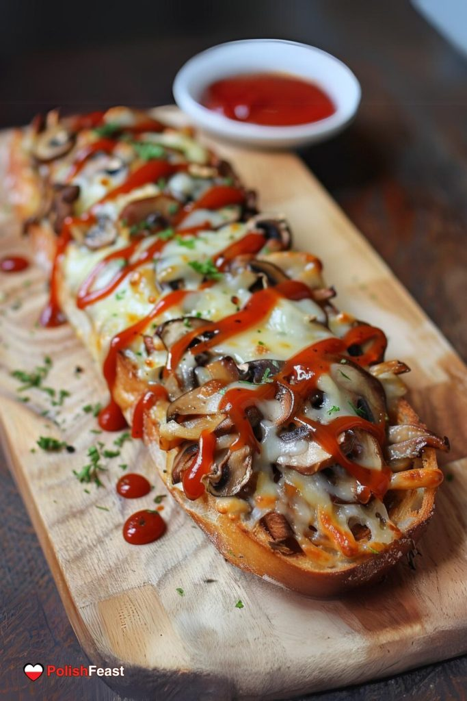

Zapiekanka

The simple polish meal that storm peoples hearts
The king of midnight and summer breaks. Simple yet tastefull. Polish zapiekanka is a street food that you will love and will craving for.
list of ingredients:
- 1 baguette
- butter
- Gouda cheese
- mushrooms (ideally champignons)
- ketchup
- salt and pepper
- ham or any meat of your choice
How to prepare this amazing meal
- Cut the baguette a half and spread the butter on it
- Fry the mushrooms in a pan with small amount of oild, pepper and salt
- Put mushrooms on a baguette and grated chees on top of that
- Add ham/meat
- Put your zapiekanka into oven for 180 degrees for 10 min. Your baguette should be crispy and gold, and cheese melted
- Take out your zapiekanka from the oven and add some ketchup on top of it
- take a phote and sent to all your friends.
Bon appétit!